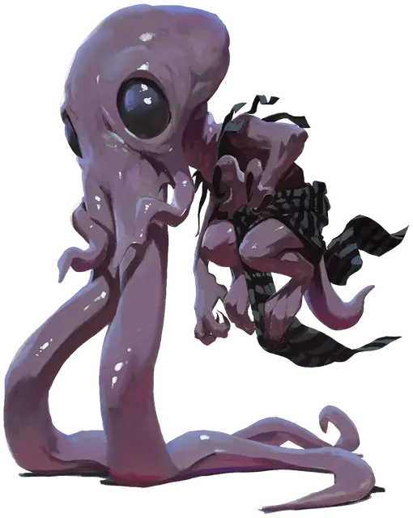

Кальмароголовый гном
Gnome Squidling
Маленькая Аберрация, любое мировоззрение

Класс Доспеха 8
Хиты 10 (3к6)
Скорость 15 футов
| мод | спас | ||
|---|---|---|---|
| СИЛ | 4 | −3 | −3 |
| ЛОВ | 7 | −2 | −2 |
| ТЕЛ | 10 | +0 | +0 |
| мод | спас | ||
|---|---|---|---|
| ИНТ | 4 | −3 | −3 |
| МДР | 10 | +0 | +0 |
| ХАР | 3 | −4 | −4 |
Чувства тёмное зрение 60 футов, пассивное Восприятие 10
Языки Глубинная речь, Гномий, Телепатия 60 фт.
Опасность 1/2 (100 опыта)
Бонус мастерства +2
Особенности
Врожденное колдовство (псионика). Базовой характеристикой гнома является Интеллект (Сл спасброска от заклинания 7). Он может накладывать следующие заклинания, не нуждаясь ни в каких компонентах:
• Неограниченно: левитация [levitate];
Сопротивление магии. Гном совершает с преимуществом спасброски от заклинаний и прочих магических эффектов
Действия
Щупальца. . Рукопашная атака оружием: +0 к попаданию, досягаемость 5 фт., одно существо. Попадание: 5 (2к4) урона психической энергией. Если размер цели не больше Среднего, она становится схваченной (Сл высвобождения равна 7) и должна преуспеть в спасброске Интеллекта Сл 7, иначе станет ошеломлённой, пока не перестанет быть схваченной.
Извлечение мозга. Рукопашная атака оружием: +0 к попаданию, досягаемость 5 фт., одно недееспособное существо схваченное гномом. Попадание: 27 (5к10) колющего урона и если этот урон снижает хиты цели до 0, гном убивает цель извлекая и пожирая её мозг.
Щипок сознания (перезарядка 5–6). Гном магическим образом испускает психическую энергию 30-футовым конусом. Все существа в этой области должны преуспеть в спасброске Интеллекта Сл 7, иначе получат 2 (1к4) урона психической энергией и станут ошеломлёнными до конца их следующего хода.
Описание
Когда процесс превращения гнома в свежевателя разума идет совсем не так, как требуется, в итоге получается кальмароголовый гном — жутко деформированный свежеватель разума со слабыми, тонкими конечностями и огромными щупальцами. Чтобы удерживать своё тело в воздухе ему приходится полагаться на левитацию, и он использует свои щупальца как ноги, перемещаясь с их помощью по любой поверхности, над которой парит. Обычно свежеватели разума сразу же уничтожают кальмароголовых, поэтому увидеть одно или несколько таких существ удается очень редко.
Кальмароголовые, как и другие свежеватели разума, поедают мозги других существ, но им, в отличии от остальных представителей этого вида, безразлично кому они принадлежали.